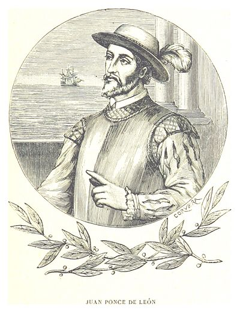
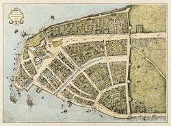
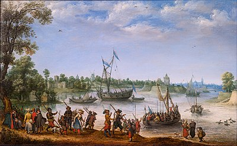
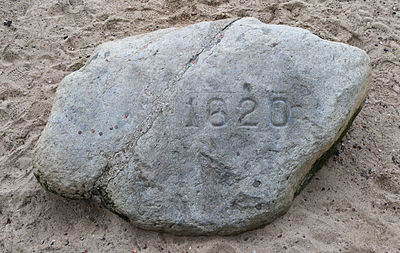
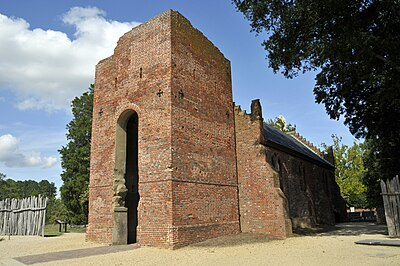
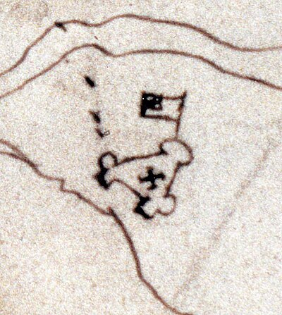
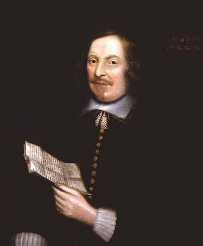

Age of Exploration
Into the Unknown — Europe Discovers the World
1400 – 1700 AD · Caravels, Compasses & Conquest
The Great Navigators

Christopher Columbus
1492 · Genoa/Spain · Atlantic
Sailed west to reach Asia — found the Americas instead. Four voyages between 1492–1504. Never acknowledged he'd found a new continent. His "discovery" (Indigenous peoples had been there 15,000 years) triggered the Columbian Exchange — the largest biological event since the Ice Age.
Vasco da Gama
1498 · Portugal · Africa to India
First European to reach India by sea (rounding Africa's Cape of Good Hope). His route to the East broke the Arab monopoly on spice trade and made Portugal Europe's richest nation. His second voyage carried 20 ships and cannon — inaugurating European maritime imperialism in Asia.
Ferdinand Magellan
1519–1522 · Portugal/Spain · Circumnavigation
Led the first expedition to circumnavigate the globe — though he died in the Philippines. His captain Elcano completed the journey with 18 survivors of 270. Proved the Earth was round and vastly larger than believed. Named the Pacific Ocean ("peaceful sea").
Henry the Navigator
1394–1460 · Portugal · Patron of Exploration
Never sailed himself, but funded and organized systematic exploration of Africa's coast. Established a school of navigation at Sagres. His captains discovered Madeira, the Azores, and Cape Verde, setting the stage for the Age of Exploration.
Hernán Cortés
1519–1521 · Spain · Conquest of Mexico
Conquered the Aztec Empire with 600 men, disease, and clever alliances with Aztec enemies. Burned his own ships to prevent retreat. His conquest made Spain the world's wealthiest empire. Sent enormous quantities of gold and silver back to Spain.
Francis Drake
1577–1580 · England · Privateer & Explorer
Second navigator to circumnavigate the globe and the first to command the voyage throughout. Raided Spanish ports and treasure ships with royal backing (a "privateer"). His success marked England's challenge to Spanish maritime supremacy.
The Colonial Empires

Spanish Empire
Americas, Philippines · 1492–1898
The first global empire. At its peak controlled 13.7 million km² — most of Latin America, the Caribbean, and the Philippines. Extracted enormous wealth (Potosí silver mine alone financed European economies). Introduced European diseases that killed 90% of indigenous Americans.
Portuguese Empire
Africa, Brazil, India, SE Asia · 1415–1999
The world's first truly global empire. Controlled the spice trade routes to India and Southeast Asia, with trading posts from Brazil to Japan. The Treaty of Tordesillas (1494) divided the world between Spain and Portugal — the original globalists.
British Empire
Global · Peak 1920 · 24% of Earth
At its peak the largest empire in history — 35.5 million km², 412 million people (23% of world population). "The Empire on which the sun never sets." North America, India, Australia, Africa. Its legacy shaped the modern world — for better and worse.
The Columbian Exchange
The Most Consequential Biological Event
After 1492, plants, animals, and diseases crossed the Atlantic for the first time. Europe got potatoes, tomatoes, corn, tobacco, chocolate. The Americas got horses, cattle, wheat, and smallpox. The potato alone transformed European population growth. The exchange reshaped the entire planet's diet.
Timeline of the Age of Exploration
1415
Portugal Takes Ceuta
Henry the Navigator participates in the capture of Ceuta in North Africa. Portugal's African exploration begins — the first step of European expansion beyond their home continent.
1488
Dias Rounds the Cape
Bartolomeu Dias becomes the first European to round the Cape of Good Hope, proving a sea route to India exists. He called it "Cape of Storms" — the king renamed it "Cape of Good Hope."
1492
Columbus Reaches the Americas
Columbus, sailing for Spain, makes landfall in the Bahamas on October 12. He believes he has reached the Indies. Europe becomes aware of an entirely unknown hemisphere for the first time in recorded history.
1494
Treaty of Tordesillas
Pope Alexander VI divides the non-European world between Spain (west) and Portugal (east) along a line 370 leagues west of Cape Verde. The entire planet carved up by two nations on a single map.

1519
Magellan Departs & Cortés Invades
The same year: Magellan departs on the first circumnavigation while Cortés lands in Mexico. Europe's expansion reaches its most audacious phase — simultaneously encircling the globe and conquering the New World's greatest empire.
1600
British & Dutch East India Companies
England (1600) and the Netherlands (1602) charter the world's first joint-stock corporations — the East India Companies. Corporate colonialism begins. These companies would eventually control much of Asia.
The Spinning Globe — Tracks of the Explorers
Click to chart a new course — exploration routes across the known and unknown world
Gallery — The Age of Exploration & Colonial America
Embarkation of the Pilgrims
Robert Walter Weir's 1844 painting depicts the Pilgrim Fathers praying aboard the Speedwell before their departure from Delfshaven for the New World in 1620.

Departure from Delfshaven
Adam Willaerts' painting of the Pilgrim Fathers leaving Delfshaven, Netherlands in 1620 aboard the Speedwell, bound for Southampton to join the Mayflower.

Plymouth Rock
The traditional landing site of the Mayflower Pilgrims in Plymouth, Massachusetts in 1620. The rock has become an enduring symbol of American colonial origins.

Jamestown Church Tower
The 1639 brick church tower at Jamestown, Virginia — the oldest standing English structure in America. Jamestown was the first permanent English settlement, founded 1607.

Map of Jamestown Fort, 1608
Spanish spy Pedro de Zúñiga's 1608 map of the Jamestown fort — one of the earliest known maps of the English settlement in Virginia, sent to King Philip III of Spain.
New Amsterdam, 1660
The Castello Plan — the only contemporary map of New Amsterdam (future New York City) before British takeover in 1664. Shows the Dutch colonial settlement at the tip of Manhattan.

Edward Winslow
The only known portrait of a Mayflower passenger painted from life (1651). Winslow was a Pilgrim leader, three-time governor of Plymouth Colony, and diplomat to England.
Juan Ponce de León
Spanish conquistador and first European governor of Puerto Rico. In 1513 he led the first European expedition to Florida, naming it "La Florida" during the Easter season.